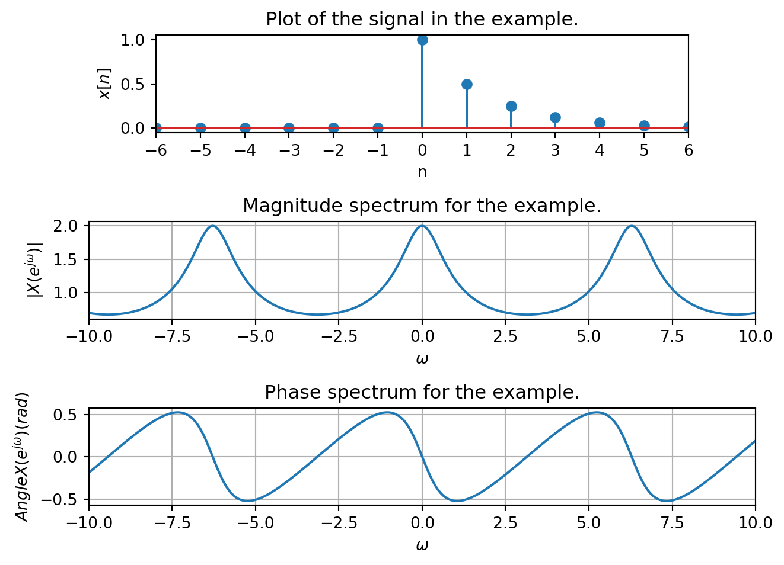
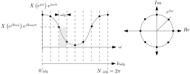

17 DT Fourier Transform
Recall the complex exponential \(z^{n}\) for \(z\in\mathbb{C}\) is the Eigenfunction of DT LTI systems. If we can decompose an input into a (possibly infinite) sum of such signals, we can easily determine the output using the superposition principle. In this section we consider the decomposition when the input is aperiodic, called the DT Fourier Transform (DTFT).
In contrast to the DT Fourier series, in this case the complex exponent of the Eigenfunction becomes \(z = e^{j\omega}\) a continuous variable, and the decomposition is an uncountably infinite sum (integral). This gives the input-output relationship for a stable DT LTI system as \[x[n] = \frac{1}{2\pi}\int\limits_{2\pi} X\left(e^{j\omega}\right) \, e^{j \omega n}\; d\omega \;\longrightarrow\; y[n] = \frac{1}{2\pi}\int\limits_{2\pi} H\left(e^{j\omega}\right) X\left(e^{j\omega}\right) \, e^{j \omega n}\; d\omega\] where \(H\left(e^{j \omega}\right)\) are the Eigenvalues, again called the frequency response. We now turn to determining under what circumstances the decomposition exists and how to find the function \(X\left(e^{j\omega}\right)\).
Note: The notation \(X\left(e^{j\omega}\right)\) can be confusing. It just emphasizes that \(z \rightarrow e^{j\omega}\). The expressions are functions of the independent variable \(\omega\).
17.1 Analysis and Synthesis Equations
Consider the Fourier series of \(x[n]\), a periodically extended finite-length DT signal \(\tilde{x}[n]\), e.g.
where \(\tilde{x}[n]\) is zero outside the range \([N_1,N_2]\). Since \(x[n] = \tilde{x}[n]\) over the interval \(-N_1\) to \(N_2\) \[a_k = \frac{1}{N}\sum\limits_{n = -N_1}^{N_2} \tilde{x}[n] e^{-j\frac{2\pi}{N}kn} = \frac{1}{N}\sum\limits_{n = -\infty}^{\infty} x[n] e^{-j\frac{2\pi}{N}kn}\] Define the function \(X\left(e^{j\omega}\right) = \sum\limits_{n = -\infty}^{\infty} x[n] e^{-j\omega n}\), then \[a_k = \frac{1}{N} X\left(e^{jk\omega_0}\right)\] are samples of \(X\left(e^{j\omega}\right)\) at locations that are multiples of \(\omega_0 = \frac{2\pi}{N}\). Substituting back into the synthesis equation \[\tilde{x}[n] = \sum\limits_{k = -N_1}^{N_2} a_k e^{j\frac{2\pi}{N}kn} = \sum\limits_{k = -N_1}^{N_2} \frac{1}{N} X\left(e^{jk\omega_0}\right) e^{jk\omega_0 n}\] Now note that \(N = \frac{2\pi}{\omega_0}\) so that \[\tilde{x}[n] = \frac{1}{2\pi} \sum\limits_{k = -N_1}^{N_2} X\left(e^{jk\omega_0}\right) e^{jk\omega_0 n} \; \omega_0\] Now let \(N \rightarrow \infty\).
\[\begin{aligned} \lim_{N\rightarrow \infty} \tilde{x}[n] &= \lim_{N\rightarrow \infty} \frac{1}{2\pi} \sum\limits_{k = -N_1}^{N_2} X\left(e^{jk\omega_0}\right) e^{jk\omega_0 n} \; \omega_0\\ x[n] &= \frac{1}{2\pi} \int_{2\pi} X\left(e^{j\omega}\right) e^{j\omega n} \; d\omega \end{aligned}\]This is shown graphically in the figure below. As \(N\) approaches infinity the sampling of the unit circle becomes infinite, and the summation approaches an integral.

This gives the DT Fourier Transform Pair. The Analysis Equation or Forward Transform is: \[X\left(e^{j\omega}\right) = \sum\limits_{n = -\infty}^{\infty} x[n] e^{-j\omega n}\] Note \(X\left(e^{j\omega}\right)\) must be a periodic function with period \(2\pi\). The Synthesis Equation or Inverse Transform is: \[x[n] = \frac{1}{2\pi} \int_{2\pi} X\left(e^{j\omega}\right) e^{j\omega n} \; d\omega\] where the integral is over any \(2\pi\) period of \(X\).
Example
Let \(x[n] = \delta[n]\)
\[\begin{aligned} X\left(e^{j\omega}\right) &= \sum\limits_{n = -\infty}^{\infty} x[n] e^{-j\omega n}\\ &= \sum\limits_{n = -\infty}^{\infty} \delta[n] e^{-j\omega n}\\ &= e^{-j\omega (0)}\\ &= 1 \end{aligned}\]Example
Let \(x[n] = \left( \gamma \right)^n\; u[n]\)
\[\begin{aligned} X\left(e^{j\omega}\right) &= \sum\limits_{n = -\infty}^{\infty} x[n] e^{-j\omega n}\\ &= \sum\limits_{n = 0}^{\infty} \left( \gamma \right)^n \; e^{-j\omega n}\\ &= \sum\limits_{n = 0}^{\infty} \left( \gamma e^{-j\omega} \right)^n \end{aligned}\]Using the geometric series \(\sum\limits_{n = 0}^{\infty} z^n = \frac{1}{1-z}\) for \(|z| < 1\) gives: \[X\left(e^{j\omega}\right) = \sum\limits_{n = 0}^{\infty} \left( \gamma e^{-j\omega} \right)^n = \frac{1}{1-\gamma e^{-j\omega}} = \frac{e^{j\omega}}{e^{j\omega} - \gamma}\] If \(\mid\gamma e^{-j\omega}\mid < 1\) or equivalently \(\mid \gamma \mid < 1\).
\[\left( \gamma \right)^n\; u[n] \; \stackrel{\mathcal{F}}{\longrightarrow} \; \frac{1}{1-\gamma e^{-j\omega}}\] Below is a plot of the original signal and the magnitude and phase spectrum when \(\gamma = \tfrac{1}{2}\).
Example
Let \[X\left(e^{j\omega}\right) = \left\{ \begin{array}{lc} 1 & |\omega -2\pi k| < \omega_c\\ 0 & \text{else} \end{array} \right. \; \text{for}\; k\in\mathbb{Z} \;\text{and}\; \omega_c < \pi\]
\[\begin{aligned} x[n] &= \frac{1}{2\pi} \int_{2\pi} X\left(e^{j\omega}\right) e^{j\omega n} \; d\omega\\ &= \frac{1}{2\pi} \int\limits_{-\omega_c}^{\omega_c} e^{j\omega n} \; d\omega\\ &= \frac{1}{2\pi} \frac{1}{jn} e^{j\omega n} \Bigg|_{-\omega_c}^{\omega_c}\\ &= \frac{1}{\pi n} \left( \frac{1}{2j} e^{j\omega_c n} - \frac{1}{2j} e^{-j\omega_c n} \right)\\ &= \frac{1}{\pi n} \sin(\omega_c n) = \frac{\omega_c}{\pi}\text{sinc}(\omega_c n) \end{aligned}\]Example
Let \[X\left(e^{j\omega}\right) = \sum\limits_{k = -\infty}^{\infty} \delta(\omega-\omega_0 -2\pi k)\] for \(-\pi < \omega_0 < \pi\)
Table [table:dtft] lists several DT Fourier Transform results.
17.2 Existence of the DT Fourier Transform
The example of the exponential \(x[n] = \left(\gamma\right)^n\,u[n]\) above showed that for the DT Fourier transform to exist, the Fourier (analysis) sum must exist. Similar to the CT Fourier transform, a mild conditions is a sufficient prerequisite for the Fourier transform of a signal \(x[n]\) to exist: it must be absolutely summable \[\sum\limits_{n = -\infty}^{\infty} |x[n]| < \infty\]
This conditions is not necessary however, and we can extend the Fourier transform to a broader class of signals, if we allow delta functions in the transform, as in the sinusoidal examples above.
17.3 Properties of the DT Fourier Transform
There are several useful properties of the DT Fourier Transform that, when combined with a table of transforms (see Table 5.2, page 392 of OW), allow us to take the Fourier transform of wide array of signals, and one, the convolution property, that allows us to determine the output of a system in the frequency domain easily. We state these here without proof in rough order of usefulness. See the course text for detailed derivations.
We use the following notation \[\mathcal{F}\left\{ x[n] \right\} = X\left(e^{j\omega}\right) = \sum\limits_{n = -\infty}^{\infty} x[n] e^{-j\omega n}\] \[\mathcal{F}^{-1}\left\{ X\left(e^{j\omega}\right) \right\} = x[n] = \frac{1}{2\pi} \int_{2\pi} X\left(e^{j\omega}\right) e^{j\omega n} \; d\omega\] \[x[n] \; \stackrel{\mathcal{F}}{\longleftrightarrow} \; X\left(e^{j\omega}\right)\] Important: \(X\left(e^{j\omega}\right)\) is periodic in \(2\pi\) such that \[X\left(e^{j(\omega + 2\pi k)}\right) = X\left(e^{j\omega}\right) \;\text{for}\; k \in \mathbb{Z}\]
Linearity Property. Let \(x_1[n] \; \stackrel{\mathcal{F}}{\longleftrightarrow} \; X_1\left(e^{j\omega}\right)\) and \(x_2[n] \; \stackrel{\mathcal{F}}{\longleftrightarrow} \; X_2\left(e^{j\omega}\right)\) then for \(a,b\in\mathbb{C}\) \[a x_1[n] + b x_2[n] \; \stackrel{\mathcal{F}}{\longleftrightarrow} \; a X_1\left(e^{j\omega}\right) + b X_2\left(e^{j\omega}\right)\] Example:
\[\begin{aligned} \mathcal{F}\left\{ 2\left( \frac{1}{2}\right)^nu[n] -5 \left( -\frac{1}{4}\right)^nu[n] \right\} &= \frac{2}{1-\frac{1}{2}e^{-j\omega}} - \frac{5}{1+\frac{1}{4}e^{-j\omega}} \end{aligned}\]Time-shift Property. Let \[x[n] \; \stackrel{\mathcal{F}}{\longleftrightarrow} \; X\left(e^{j\omega}\right)\] then \[x[n-n_0] \; \stackrel{\mathcal{F}}{\longleftrightarrow} \; e^{-j\omega n_0} X\left(e^{j\omega}\right)\] Example: \[\mathcal{F}\left\{ \delta[n-5] \right\} = e^{-j5\omega}\]
Frequency Shift Property. Let \[x[n] \; \stackrel{\mathcal{F}}{\longleftrightarrow} \; X\left(e^{j\omega}\right)\] then \[e^{j\omega_0 n} x[n] \; \stackrel{\mathcal{F}}{\longleftrightarrow} \; X\left(e^{j(\omega-\omega_0)}\right)\] Example: \[\mathcal{F}^{-1}\left\{ \frac{1}{1-\frac{1}{2}e^{-j\omega}e^{j\frac{\pi}{20}}} \right\} = e^{j\frac{\pi}{20} n} \left( \frac{1}{2}\right)^n u[n]\]
Conjugation Property. Let \[x[n] \; \stackrel{\mathcal{F}}{\longleftrightarrow} \; X\left(e^{j\omega}\right)\] then \[x^*[n] \; \stackrel{\mathcal{F}}{\longleftrightarrow} \; X^{*}\left(e^{-j\omega}\right)\] Thus, if \(x[n]\) is real \(X\left(e^{j\omega}\right)\) has conjugate symmetry \[X\left(e^{-j\omega}\right) = X^*\left(e^{j\omega}\right)\] and the magnitude spectrum is an even function and the phase spectrum is an odd function.
Differencing and Accumulation Property. Let \[x[n] \; \stackrel{\mathcal{F}}{\longleftrightarrow} \; X\left(e^{j\omega}\right)\] then \[x[n] - x[n-1] \; \stackrel{\mathcal{F}}{\longleftrightarrow} \; X\left(e^{j\omega}\right) - e^{-j\omega} X\left(e^{j\omega}\right) = \left(1-e^{-j\omega}\right)X\left(e^{j\omega}\right)\] and \[\sum\limits_{m = -\infty}^{n} x[m] \; \stackrel{\mathcal{F}}{\longleftrightarrow} \; \frac{1}{1-e^{-j\omega}}X\left(e^{j\omega}\right) + \pi X\left(e^{j0}\right)\sum\limits_{k = -\infty}^{\infty} \delta(\omega - 2\pi k)\]
Time Expansion Property. Let \[x[n] \; \stackrel{\mathcal{F}}{\longleftrightarrow} \; X\left(e^{j\omega}\right)\] then \[x_{(k)}[n] \; \stackrel{\mathcal{F}}{\longleftrightarrow} \; X\left(e^{jk\omega}\right)\] where \[x_{(k)}[n] = \left\{ \begin{array}{lc} x[n/k] & \text{if}\; n = \; \text{multiple of}\; k\\ 0 & \text{if}\; n \neq \; \text{multiple of}\; k\\ \end{array} \right.\]
Frequency Differentiation Property Let \[x[n] \; \stackrel{\mathcal{F}}{\longleftrightarrow} \; X\left(e^{j\omega}\right)\] then \[n\, x[n] \; \stackrel{\mathcal{F}}{\longleftrightarrow} \; j \frac{d}{d\omega} X\left(e^{j\omega}\right)\] Example:
\[\begin{aligned} \mathcal{F}\left\{ n\left( \frac{1}{8}\right)^n u[n] \right\} &= j \frac{d}{d\omega} \left\{\frac{1}{1-\frac{1}{8}e^{-j\omega}} \right\}\\ &= j \frac{-\left(-\frac{1}{8} (-j)e^{-j\omega}\right)}{\left( 1-\frac{1}{8}e^{-j\omega} \right)^2}\\ &= \frac{\frac{1}{8}e^{-j\omega}}{\left( 1-\frac{1}{8}e^{-j\omega} \right)^2} \end{aligned}\]Parseval’s Relation. Let \[x[n] \; \stackrel{\mathcal{F}}{\longleftrightarrow} \; X\left(e^{j\omega}\right)\] then \[\sum\limits_{n = -\infty}^{\infty} |x[n]|^2 \; \stackrel{\mathcal{F}}{\longleftrightarrow} \; \frac{1}{2\pi} \int_{2\pi} \left| X\left(e^{j\omega}\right) \right|^2 \; d\omega\] The energy is also the integral over one period of the DTFT magnitude squared.
Convolution Property. Recall for a DT LTI system with impulse response \(h[n]\) the output is \[y[n] = h[n]*x[n]\] In the frequency domain this is equivalent to \[Y\left(e^{j\omega}\right) = H\left(e^{j\omega}\right) \, X\left(e^{j\omega}\right)\] As in CT systems, convolution in the discrete-time domain is equivalent to multiplication in the frequency domain. Example: suppose a DT system has impulse response \[h[n] = \left( \gamma_1^n + \gamma_2^n \right)\, u[n]\] and the input is \(x[n] = n\, \gamma_3^n\, u[n]\) where \(|\gamma_1| < 1\), \(|\gamma_2| < 1\), \(|\gamma_3| < 1\). The output in the frequency domain is
\[\begin{aligned} Y\left(e^{j\omega}\right) &= H\left(e^{j\omega}\right) \, X\left(e^{j\omega}\right)\\ &= \left[ \frac{1}{1-\gamma_1 e^{-j\omega}} + \frac{1}{1-\gamma_2 e^{-j\omega}} \right] \frac{\gamma_3 e^{-j\omega}}{\left( 1-\gamma_3 e^{-j\omega} \right)^2}\\ &= \frac{\gamma_3 e^{-j\omega}}{\left(1-\gamma_1 e^{-j\omega}\right)\left( 1-\gamma_3 e^{-j\omega} \right)^2} + \frac{\gamma_3 e^{-j\omega}}{\left(1-\gamma_2 e^{-j\omega}\right)\left( 1-\gamma_3 e^{-j\omega} \right)^2} \end{aligned}\]Multiplication (modulation) Property. Let \[x[n] \; \stackrel{\mathcal{F}}{\longleftrightarrow} \; X\left(e^{j\omega}\right)\] and \[y[n] \; \stackrel{\mathcal{F}}{\longleftrightarrow} \; Y\left(e^{j\omega}\right)\] then \[x[n]\,y[n] \; \stackrel{\mathcal{F}}{\longleftrightarrow} \; \frac{1}{2\pi} \int_{2\pi} X\left(e^{j\theta}\right)\, Y\left(e^{j(\omega-\theta)}\right)\; d\theta\]
17.4 DT Fourier Transform of a Periodic Signal
The DTFS allows us to write any periodic function with period \(N\) as \[x[n] = \sum\limits_{k = N_0}^{N_0 + N -1} a_k e^{j\frac{2\pi}{N}kn}\] taking the DT Fourier Transform \[X\left(e^{j\omega}\right) = \sum\limits_{k = N_0}^{N_0 + N -1} a_k \mathcal{F}\left\{e^{j\frac{2\pi}{N}kn}\right\}\] Using the previously derived transform shows, similar to CT, the DT Fourier Transform of a periodic signal is \[X\left(e^{j\omega}\right) = \sum\limits_{k = -\infty}^{\infty} 2\pi a_k \delta\left(\omega - \frac{2\pi k}{N}\right)\]
Example \[x[n] = \cos\left(\frac{2\pi}{10} n\right) = \frac{1}{2}e^{j\frac{2\pi}{10} n} + \frac{1}{2}e^{-j\frac{2\pi}{10} n}\] Using the previous transform \[X\left(e^{j\omega}\right) = \sum\limits_{k = -\infty}^{\infty} \pi \delta\left(\omega - \frac{2\pi}{10} -2\pi k\right) + \pi \delta\left(\omega + \frac{2\pi}{10} -2\pi k\right)\] Which looks like